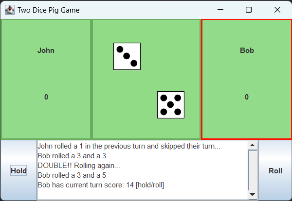

Two-dice Pig is a variation of the dice game called Pig. It is a two player game that involves a pair of dice and the following rules when a player rolls the dice:
I was responsible for recreating two-dice Pig in Java with GUI elements. I used components from Java Swing, a GUI widget toolkit, to create the visuals for the dice, player panels, and turn summary. This was made for an assignment when I was in ICS 111.
Before I did this assignment, the programs I developed mainly used a console or web browser to display its contents. The two-dice Pig game has helped me gain some experience using Java and designing GUIs with Java Swing.
Source: eric-z4/two-dice-pig